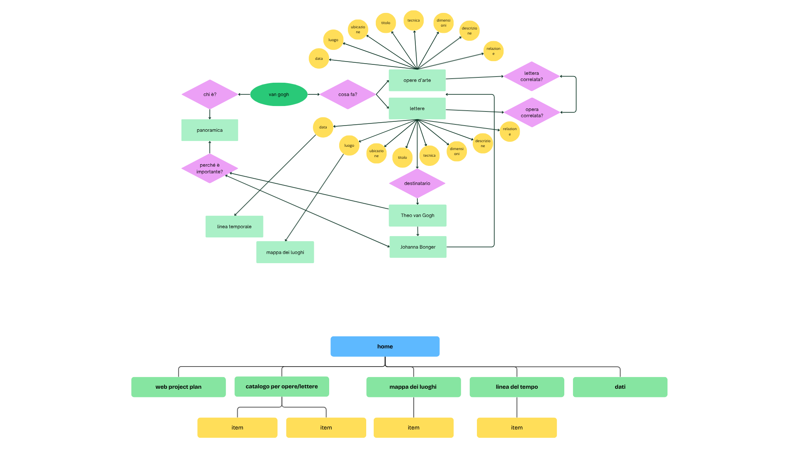

L’obiettivo del progetto è rendere accessibile l’analisi delle opere d’arte di Vincent Van Gogh attraverso le parole dell’autore, il quale scrive in numerose occasioni a suo fratello Theo van Gogh, raccontando aneddoti e suggestioni che hanno ispirato la sua arte e conducendo riflessioni sulla propria vita che sono in grado di far vedere con occhi nuovi i suoi dipinti.
Gli ambiti disciplinari interessati sono arte e letteratura.
In quanto a tipo di sito questo si presenta come una collezione di risorse quali testi e immagini.
Il sito è rivolto agli appassionati di arte o anche solo a chi è interessato alla correlazione tra gli scritti e i dipinti di Van Gogh, ma non si pone l’obiettivo di essere didattico, infatti l’interesse per questa tematica proviene dalla lettura dell’epistolario dell’autore e dal supporto alla lettura riscontrato nella cronologia delle opere, pertanto si è deciso di unire i due elementi per una panoramica unitaria.
L’accesso è libero e i mezzi di comunicazione prescelti sono il PC e il tablet, dal momento che nel sito si includono anche immagini di manoscritti che non sarebbero pienamente apprezzabili su schermi più piccoli.
I contenuti saranno sia in forma testuale, sia grafici come immagini a causa della presenza delle opere in forma digitalizzata; animazioni e icone saranno utilizzate.
Si darà spazio ad una mappa interattiva per mostrare l’attività dell’autore in relazione ai suoi numerosi spostamenti e ad una linea cronologica per la datazione degli scritti.
I contenuti saranno presi principalmente dal sito ufficiale del Van Gogh Museum di Amsterdam, al quale si riservano tutti i diritti delle opere, e da Wikipedia, che permette la ricondivisione con la licenza Creative Commons.
Esistono diversi siti che si occupano della produzione di Vincent van Gogh:
Questo sito si occupa delle lettere di Van Gogh, è molto ricco di materiali ma ha un’interfaccia piuttosto datata, poco user-friendly e non offre la possibilità di vedere i testi in italiano.
Questo sito si occupa invece delle opere artistiche dell’autore, ha un’interfaccia migliore, utilizza tools di ricerca integrativi, ma mostra solo i dipinti e gli schizzi e non le lettere dell’autore.
Questo sito è curato direttamente dal museo di Van Gogh ad Amsterdam, ricchissimo di opere, ha un’interfaccia bella e semplice da usare e riporta le immagini delle lettere inviate, ma queste non sono né trascritte né tradotte.

La mappa concettuale e lo schema delle dipendenze sono state realizzate attraverso il programma Canva.
Le categorie utilizzate per la descrizione degli elementi sono state scelte seguendo il sistema Dublin Core:
L'architettura d'interfaccia prevede l’intestazione, la barra di navigazione primaria e, quando presente, la barra di navigazione secondaria, situata al lato della pagina, che saranno sempre nella stessa posizione per non disorientare l’utente; lo stesso vale per il piè di pagina.
Il corpo della pagina ha un layout coerente nelle varie pagine, con lo sfondo, il font e i colori del testo utilizzati nello stesso modo. Il corpo ha ovviamente specifiche caratteristiche in base all’obiettivo comunicativo della pagina in esame.
Per il catalogo si è scelto in particolare di utilizzare delle tab in modo da visualizzare in modo alternativo le opere o le lettere dell’autore, con i relativi titoli, accompagnandolo ad una pagination nel caso in cui dovessero entrare più elementi a far parte della raccolta.
Il corpo della pagina dell’item, nel caso in cui questo fosse una lettera, invece prevede l’utilizzo di una flip card in modo da poter mostrare da un lato l’immagine del manoscritto e dall’altro lato la trascrizione e traduzione in italiano della lettera in questione.
Nel caso in cui la lettera avesse una trascrizione più lunga è previsto l’utilizzo di una barra di scorrimento per il testo.
Se avessimo invece come oggetto della raccolta nella pagina item un dipinto, allora il retro della flip card potrebbe ospitare una descrizione dell’opera
Per quanto riguarda la pagina dei dati il corpo occupa tutto lo spazio, data la rilevanza della tabella con i metadati degli oggetti inclusi nella raccolta.
La barra di navigazione primaria, integrata nella testata, ospita sei collegamenti per non risultare più pesante del necessario all’utente, utilizza icone evocative e la pagina che si sta visitando compare come attiva.
In alcune pagine del sito troviamo una barra di navigazione laterale (in posizione fissa) con diverse funzioni di ricerca.
Nella pagina dedicata al progetto questa offre i riferimenti interni alla sezione di testo, mentre nella pagina catalogo è presente un accordion con i riferimenti alle fasi della vita e ai luoghi di attività.
Nella pagina item la barra laterale non ha più la funzione di navigazione secondaria ma espone i dati relativi all’opera.
Troviamo una navigazione contestuale nella pagina del catalogo, con dei link potenzialmente utili all’utente interessato ad informazioni aggiuntive che non avrei potuto includere con lo stesso grado di approfondimento, o per riferimenti ad altre collezioni.
Le breadcrumbs sono presenti in ogni pagina, allo scopo di dare sempre una chiara indicazione della struttura gerarchica delle pagine del sito all’utente, in modo da potersi orientare o tornare indietro attraverso di esse.
La metanavigazione è riservata al piè di pagina, con informazioni che riguardano le licenze e il progetto.
Il progetto prevede due ulteriori pagine dedicate a servizi integrativi di navigazione secondaria, ovvero la linea del tempo e la mappa dei luoghi, anche queste strutturate per essere più funzionali possibile agli scopi del sito.
La progettazione presentata qui non rispecchia totalmente il layout finale delle pagine, dal momento che alcuni strumenti e cambiamenti sono stati aggiunti in corso d’opera. I wireframe sono stati realizzati attraverso il programma Wireframe.cc
Il concetto di usabilità è stato la linea guida della progettazione, come già detto per le scelte di layout i posizionamenti degli elementi sono coerenti e il sito è facilmente navigabile attraverso strumenti diversi, mantenendo comunque sempre riferimento alla struttura gerarchica interna.
Viene utilizzato il box di approfondimento per associazione contestuale, sono impiegati vari box di contenuto all’interno dell’architettura del sito e l’utente ha sempre la possibilità di tornare alla home del sito.
L’aspetto e la tipografia delle pagine seguono lo stesso principio, lo stile è sempre lo stesso.
Per quanto riguarda i testi ci si è sforzati per renderli più brevi e chiari possibile, con il testo non giustificato, interlinea grande e, nel caso di testi particolarmente lunghi come nella pagina “Progetto”, si offre una navigazione con riferimenti interni al corpo del testo.
In ogni momento all’interno del sito è possibile per l’utente vedere dove si trova, infatti la barra di navigazione primaria offre un feedback.
Per la struttura dei testi si è cercato di dare sempre una struttura gerarchica interna con titoli, sottotitoli e liste, utilizzando link e immagini per spezzare il blocco di testo.
In alcuni punti si utilizza il grassetto per la lettura selettiva, enfatizzando le parole chiave o i punti più rilevanti.
Infine vengono utilizzati sempre gli attributi @alt per le immagini, per consentire l’accessibilità a persone con disabilità, e @title per i link e le immagini.
I colori sono stati scelti principalmente per il loro contrasto tra tonalità calde per i contenuti e colori freddi per la navigazione secondaria.
Il font è stato scelto all’interno della libreria Google Fonts per essere sicuro per il web, ma comunque è stato inserito un fallback in caso il browser non dovesse supportarlo.
Allo stesso modo le icone sono state scelte dalla libreria di Font Awsome in modo da essere sicure, e si è cercato di renderle evocative.
Ulteriori strumenti di browsing sono previsti, come la linea del tempo nella pagina “I momenti” e la mappa dei luoghi nella pagina “I luoghi”, per consentire un approccio diverso e forse più interessante all’esplorazione delle risorse.
Una funzione ulteriore che sarebbe possibile e interessante inserire è la navigazione per parole chiave, in quanto ci sono diversi temi ricorrenti nelle opere dell’artista.
Quanto a strumenti di interazione il sito utilizza bottoni, tabs nel catalogo, cards nella home e nell’item, accordion, tooltips per i link ed effetti sulle immagini (overlay nella navigazione secondaria della home e zoom sull’immagine della sezione hero nella stessa pagina).
Penso che in una prospettiva di sviluppo futuro del sito sarebbe interessante, qualora entrassero più testi a far parte della collezione, integrare uno strumento di analisi testuale su di essi (come ad esempio indici di frequenza e collocazioni) dal momento che l’artista riesamina più volte gli stessi temi nel corso della sua vita.